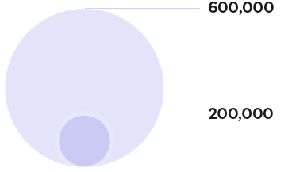
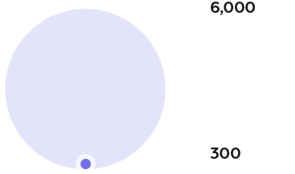

Logística y distribución
Para esta etapa se realizó un análisis de la contaminación que ocasionan diversos medios de transporte a través de indicadores como energía consumida y emisiones CO2
Los mapas del trayecto refleja el trancurso de una prenda en una ruta internacinonal y el segundo una ruta local, ambas muestran el transcurso desde la fabricación hasta el aparador.
Ejercicio de simulación
Haremos un ejercicio que nos permita ver cual es el impacto que se genera al trasladar una playera de algodón. Por un lado en una ruta internacional y por otro, una ruta local.
Ruta internacional
Las marcas de moda trasnacionales, suelen llevar a cabo rutas que recorren grandes distancias a través del mundo que va desde el lugar donde se produce la materia prima hasta la distribución de la prenda confeccionada.
Aquí tienes un ejemplo de un análisis que se realizó a partir de una ruta simulatoria de el país que consume más ropa a nivel mundial
Indicadores de contaminación
Distancia
0 KM
Energía consumida
0 MG
Emisión de CO2
0 T
Medios de transporte
CO2 (toneladas)
Alto: 20-30
Medio: 10-20
Bajo: 0-10
Energía (megajulios)
Ruta local
A diferencia de las marcas trasnacionales, los diseñadores de moda que no producen a gran escala, manejan otra logística muy distinta.
Como ejemplo para este ejercicio, se tomará la ruta que lleva a cabo Jorge, un diseñador de moda mexicano quien se ha interesado en el mundo del upcycling.
Por otro lado se tomó esta ruta basados en la marca de dennjs, basada en México
Indicadores de contaminación
Distancia
0 KM
Energía consumida
0 MG
Emisión de CO2
0 T
Medios de transporte
CO2 (toneladas)
Alto: 3.5 - 5
Medio: 1.5 - 3
Bajo: 0.5 - 1.5
Energía (megajulios)
Resultados
Aquí te mostramos la comparativa de estas dos rutas, como te darás cuenta el impacto generado en cada una de ellas es evidentemente distinto.
Hay un sin fin de marcas que seguramente puedes encontrar en el lugar donde vives, y tienen iniciativas sostenibles o circulares, en las siguientes etapas te brindaremos un par de alternativas para que puedas adquirir productos desde tu localidad